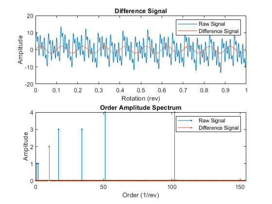
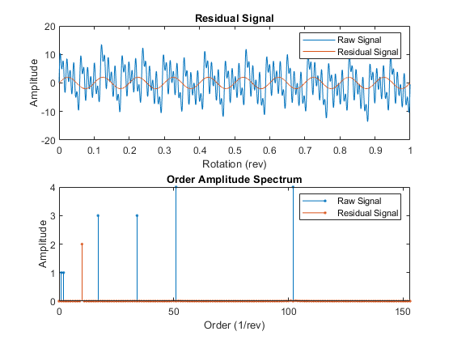

1.1. 数据管理
fileEnsembleDatastore用来读取文件夹中符合文件扩展形式的所有数据文件，如
fensemble = fileEnsembleDatastore('D:\RQMS\电流传感器故障\data\ERX5\','.csv')
fensemble = fileEnsembleDatastore('D:\RQMS\电流传感器故障\data\ERX5\','.csv','ConditionVariables',["FaultCond";"ID"])此时结果fensemble具有以下属性，属于object类型

之后的几个函数都是基于这个fileEnsembleDatastore展开的操作
simulationEnsembleDatastore直接从simulink模型中读取数据到对象中，其中generateSimulationEnsemble函数直接用来读取simulink数据
read和writeToLastMemberRead同属于对数据存储对象操作的函数，分别为从集成的数据存储中读取一部分子数据集和写数据到集成数据集中的某一子数据集中
1.2. 数据预处理
本文档仅介绍预测性维护工具箱新引入的函数，对于包含在别的工具箱中用到的函数不加介绍
信号分析函数
tsadifference，时间同步平均信号的差分信号
tsaregular，时间同步平均信号的正则信号
tsaresidual，时间同步平均信号的残值信号
使用形式：
Y = tsa__(X,fs,rpm,orderList)
Y = tsa__(X,t,rpm,orderList)
Y = tsa__(XT,rpm,orderList)
[Y,S] = tsa__(___)
___ = tsa__(___)其中，X表示mat形式的时间同步平均信号，XT表示timetable形式的时间同步平均信号，fs表示TSA信号的采样频率，t表示采样时间，rpm表示机器转速，orderList表示需要在TSA信号中被滤除的阶数
频率带生成函数
bearingFaultBands，围绕滚珠或滚子轴承的特征故障频率生成频带或进行光谱特征提取gearMeshFaultBands，围绕啮合齿轮的特征故障频率构造频带或进行频谱特征提取faultBands，生成故障频带进行光谱特征提取
前两个函数的输入参数都有赖于轴承或者齿轮的参数，非常具有特异性，不具有普遍性，就不展开细述
faultBands主要基于机器的基础频率和基础频率的谐振得出故障频率带，示例如下


1.3. 健康状况指标识别
表征混沌运动过程
phaseSpaceReconstruction，将观测到的时间序列转化为状态向量，将作为下列approximateEntropy，correlationDimension，lyapunovExponent三项指标计算的第一步。最终求得三个值，空间重构后的数据XR，预计的延迟值eLag，嵌入维度eDim。例如某个空间重构后的时序数据在求得eLag和eDim后的图像如下

其中x1(t), x1(t + 10), x1(t + 20) 中的10, 20表示相位差，即eLag产生的结果
approximateEntropy，近似熵，用来计算非线性时间序列正则性测度。简单来说信号的随机性越高，正则性越低，近似熵越小，反之越大。对于时序信号数据可直接使用该函数，对于观测到的数据，可使用上述相空间重构函数重构数据并得到eLag和eDim后带入函数求得近似熵。
correlationDimension，混沌信号的复杂度度量指标
lyapunovExponent，李雅普诺夫指数，表示相空间相邻轨迹的平均指数发散率的数值特征，用于识别混沌运动的指标之一
时序数据的频谱特征分析
faultBandMetrics，针对功率谱中特定故障频率带的频谱指标
gearConditionMetrcs，齿轮状态监控的标准指标
tfmoment，信号时频分布的联合力矩
tfsmoment，信号时频分布的条件谱矩
tftmoment，信号时频分布的条件时间矩
1.4. 检测、预测故障和寿命预测
主要分为趋势分析方法、模型和具有其他辅助功能的函数
趋势分析
monotonicity，对健康状况指标单调性的量化指标，标准为0-1，0表示无单调性，1表示完全单调。输入数据类型为cell,table,timetable,tall, fileEnsembleDatastore，样例如下


prognosability，度量失效时健康状况指标的可预测性，原理是可预测特征在初始值和终值之间的范围具有更小的可变性，数据依据为多次全寿命周期测得的该时序数据的特征轨迹。之后可以从可预测性大的特征入手构造健康状况指标。数值范围0-1，0表示不可预测，1表示完全可预测。样例如下

trendability，度量健康状况指标轨迹间的相似性。数值为0-1之间，0表示无趋势，1表示趋势明显。样例如下

模型
exponentialDegradationModel，对RUL预测建立指数退化模型
linearDegradationModel，对RUL预测建立线性退化模型
hashSimilarityModel，用于预测RUL的散列特征相似性模型，散列特征相似性模型将每个训练数据的退化曲线数据转换为一系列散列特征，例如数据的平均值、标准差、峰值、功率、最小值或最大值
pairwiseSimilarityModel，基于两两比较（用测试数据的相似性曲线和训练数据的相似性曲线进行两两对比）的用于预测RUL的相似性模型，计算原理为相关性或动态时间规整
residualSimilarityModel，基于残值对比的用于预测RUL的相似性模型，需事先给定部件退化模型，然后基于该模型对所有退化数据做拟合，得出拟合模型和给定模型的残差，以此为依据预测RUL
covarianteSurvivalModel，评估剩余使用寿命的比例风险生存模型，该模型使用关于组件寿命和相关协变量的历史信息来描述测试组件的生存概率
reliabilitySurvialModel，建立部件失效时间的概率分布，估计剩余使用寿命的概率失效时间模型
以上模型使用的共同前提是，有一组相似部件的全寿命失效模型数据，如多台在被生产制造出来时具有相同配置的机器
其他功能函数
predictRUL，预测RUL，与上述模型搭配使用
compare，为相似性模型比较测试数据和历史训练数据，样例如下，黄色曲线为测试数据

fit，模型拟合
restart，重置RUL预测的退化模型
update，使用最新的退化过程测量数据，更新退化剩余寿命模型的后验参数分布
1.5. 部署算法
主要有codegen和mcc两种方式，第一种直接从matlab代码生成C/C++代码，第二种编译matlab函数进行部署
codegen： 具体内容和配置可以在Matlab Coder App中完成，随后生成指定文件
mcc：
mcc options mfilename1 mfilename2...mfilenameN直接用来编译mcc -m options mfilename和mcc -e options mfilename用来生成单一.exe程序mcc -H -W hadoop:archiveName,CONFIG:configFile用来生成Hadoop集群可执行的程序